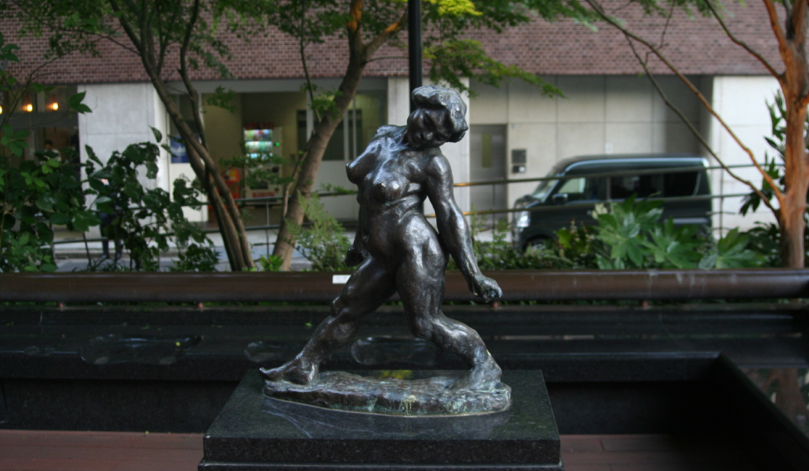
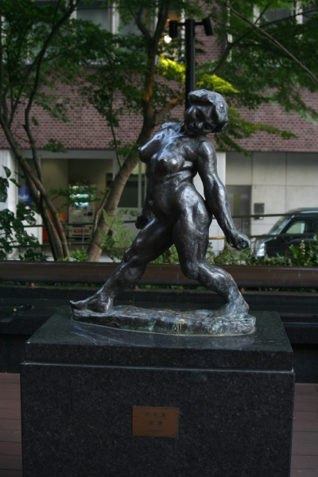
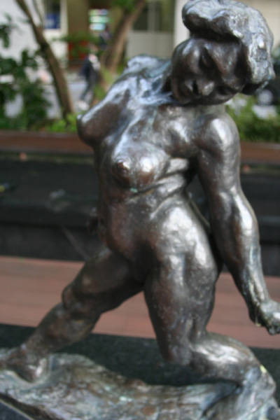
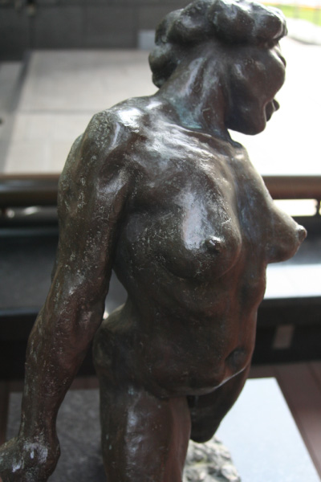
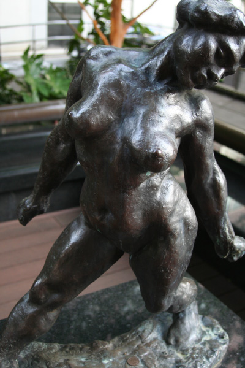

安永 良徳
   
作者の安永良徳は昭和の彫刻家。旧福岡藩士安永徳の長男として、横浜市に生
まれた。1927年、東京美術学校彫刻科を卒業。1931年、アトリエを構え、彫
刻家として活動をした。1941年から従軍し、終戦後はソ連によりシベリアに
抑留されて1947年に復員する。戦後は福岡に定住し、福岡県美術協会理事長、
福岡ユネスコ協会常務理事などを歴任。福岡の美術界の指導者として活動した。